Tarea 5 Ingeniería Sísmica 2022-1
Cristóbal Adasme - Alexis Contreras
Contents
- Inicializar
- Pregunta 1
- P1 a)
- P1 b)
- P1 c)
- P1 d)
- P1 e)
- P1 f)
- Pregunta 2
- P2 a)
- P2 b)
- P2 c)
- P2 d)
- P2 e)
- P3
- P3 a)
- P3 b)
- P3 c)
- P3 d)
- P3 e)
- P4 Análisis modal tiempo historia
- P4 a) Corte basal máximo
- P4 b) Fuerzas laterales máximas
- P4 c) Esfuerzo de corte máximo de cada piso
- P4 d) desplazamientos laterales máximos
- P4 e) razón de derivas de piso máximoas
- P5
Inicializar
clear variables close all clc
Pregunta 1
% Parámetros g = 980; % cm/s2 htotal = 40*100; % m Wtotal = 8730; %tonf W = 900; % tonf % Peso W k = 500; %tonf/cm % Rigidez K cant_pisos = 10; % Cantidad de pisos h = htotal/cant_pisos; % Altura de cada piso Pisos = (cant_pisos:-1:1)'; Modos = flip(Pisos); k1 = 0.2*k; k2 = 0.2*k; k3 = 0.4*k; k4 = 0.4*k; k5 = 0.6*k; k6 = 0.6*k; k7 = 0.8*k; k8 = 0.8*k; k9 = k; k10 = k; m1 = 0.5*W/g; m2 = 0.8*W/g; m3 = W/g; m4 = W/g; m5 = W/g; m6 = W/g; m7 = W/g; m8 = W/g; m9 = W/g; m10 = 1.4*W/g; M = diag([m1 m2 m3 m4 m5 m6 m7 m8 m9 m10]); K = [k1 -k1 0 0 0 0 0 0 0 0; -k1 k2+k1 -k2 0 0 0 0 0 0 0; 0 -k2 k3+k2 -k3 0 0 0 0 0 0; 0 0 -k3 k4+k3 -k4 0 0 0 0 0; 0 0 0 -k4 k5+k4 -k5 0 0 0 0; 0 0 0 0 -k5 k6+k5 -k6 0 0 0; 0 0 0 0 0 -k6 k7+k6 -k7 0 0; 0 0 0 0 0 0 -k7 k8+k7 -k8 0; 0 0 0 0 0 0 0 -k8 k9+k8 -k9; 0 0 0 0 0 0 0 0 -k9 k10+k9]; G = [-m1; -m2; -m3; -m4; -m5; -m6; -m7; -m8; -m9; -m10]; r = diag(ones(cant_pisos)); disp('Matriz de masa [M]') disp(M) disp('Matriz de rigidez [K]') disp(K)
Matriz de masa [M]
Columns 1 through 7
0.4592 0 0 0 0 0 0
0 0.7347 0 0 0 0 0
0 0 0.9184 0 0 0 0
0 0 0 0.9184 0 0 0
0 0 0 0 0.9184 0 0
0 0 0 0 0 0.9184 0
0 0 0 0 0 0 0.9184
0 0 0 0 0 0 0
0 0 0 0 0 0 0
0 0 0 0 0 0 0
Columns 8 through 10
0 0 0
0 0 0
0 0 0
0 0 0
0 0 0
0 0 0
0 0 0
0.9184 0 0
0 0.9184 0
0 0 1.2857
Matriz de rigidez [K]
Columns 1 through 6
100 -100 0 0 0 0
-100 200 -100 0 0 0
0 -100 300 -200 0 0
0 0 -200 400 -200 0
0 0 0 -200 500 -300
0 0 0 0 -300 600
0 0 0 0 0 -300
0 0 0 0 0 0
0 0 0 0 0 0
0 0 0 0 0 0
Columns 7 through 10
0 0 0 0
0 0 0 0
0 0 0 0
0 0 0 0
0 0 0 0
-300 0 0 0
700 -400 0 0
-400 800 -400 0
0 -400 900 -500
0 0 -500 1000
P1 a)
[Phi, lambda] = eig(K,M); % Problema de valores y vectores propios wn = diag(lambda.^0.5); % Frecuencia de cada modo wn2 = wn.^2; Tn = 2*pi./wn; % Periodo de cada modo tabla = table(); tabla.Modo_n = Modos; tabla.Periodos_Tn = Tn; tabla.FreqAngular_wn = wn; disp(tabla) clear tabla
Modo_n Periodos_Tn FreqAngular_wn
______ ___________ ______________
1 1.988 3.1606
2 0.81474 7.7119
3 0.52376 11.996
4 0.38083 16.499
5 0.308 20.4
6 0.27795 22.606
7 0.24313 25.843
8 0.2063 30.456
9 0.18036 34.838
10 0.15614 40.24
P1 b)
Caluclar factores de participación modal Gamma_n y las formas modales {Phi_n} Graficar Gamma_n{Phi_n} para los primeros 5 primeros modos
Mn = diag(Phi.'*M*Phi); Kn = diag(Phi.'*K*Phi); % Gamma_n Gamma_n = Phi.'*M*r./Mn; % Comentarios tabla = table(Modos,Gamma_n); disp(tabla) clear tabla % Graficamos Gamma_n*phi_n para 5 modos Todos separados cant_modos_dibujar = 5; % Cantidad de modos que queremos dibujar (cambiar si se quieren dibujar más) figure for i = 1:cant_modos_dibujar subplot(1,cant_modos_dibujar,i) plot([Gamma_n(i)*Phi(:,i); 0],[Pisos; 0], '-o') xlabel(['\Gamma_', num2str(Modos(i)), '\{\phi_{', num2str(Modos(i)), '}\}']) xlim([-1.5 1.5]) if i == 1 ylabel('Piso') hold on end end hold off sgtitle('\Gamma_n \{\phi_n\}') % Graficamos Gamma_n*phi_n para 5 modos Todos juntos figure hold on for i = 1:cant_modos_dibujar plot([Gamma_n(i)*Phi(:,i); 0],[Pisos; 0], '-o') end hold off xlabel('\Gamma_n \{\Phi_n\}') ylabel('Piso') legend(strcat('Modo ',string(1:cant_modos_dibujar))) grid on
Modos Gamma_n
_____ ________
1 2.5715
2 1.0725
3 0.70653
4 -0.56486
5 0.2755
6 -0.37333
7 0.21916
8 -0.17987
9 -0.14934
10 0.095834


P1 c)
Calcular Masa modal Equivalente y determine el número de modos necesario para que la suma de la masa modal equivalente sea al menos un 90% de la masa total del edificio
Mn_ast = zeros(cant_pisos,1); for n = 1:cant_pisos for j = 1:cant_pisos Mn_ast(n,1) = Mn_ast(n,1) + M(j,j)*Gamma_n(n)*Phi(j,n); end end PMass = Mn_ast/(Wtotal/g); % Porcentaje de Masa modal Equivalente de cada modo PMass_acum = zeros(cant_pisos,1); % Porcentaje de Masa modal equivalente acumulado PMass_acum(1,1) = PMass(1,1); counter = 0; % Contador para ver si ya encontró la solución for i = 2:cant_pisos PMass_acum(i,1) = PMass_acum(i-1,1) + PMass(i,1); if PMass_acum(i,1) > 0.9 && counter == 0 fprintf('Solo se requieren los primeros %i modos \n \n', Modos(i,1)) counter = 1; end end % Comentarios consola tabla = table(); tabla.Modos = Modos; tabla.MasaModalEquivalente = Mn_ast; tabla.PorcntajeDeMasa = PMass; tabla.PorcntajeDeMasaAcum = PMass_acum; disp(tabla) clear tabla % Para verificar % Sum(Mn_Ast) = Sum(diag(M))
Solo se requieren los primeros 3 modos
Modos MasaModalEquivalente PorcntajeDeMasa PorcntajeDeMasaAcum
_____ ____________________ _______________ ___________________
1 6.6124 0.74229 0.74229
2 1.1503 0.12913 0.87142
3 0.49918 0.056037 0.92746
4 0.31907 0.035818 0.96328
5 0.0759 0.0085203 0.9718
6 0.13938 0.015646 0.98744
7 0.048032 0.0053919 0.99283
8 0.032354 0.003632 0.99647
9 0.022303 0.0025036 0.99897
10 0.0091841 0.001031 1
P1 d)
Amortiguamiento del primer modo utilizando fórmula propuesta por Cruz & Miranda (2021)
xi = zeros(cant_pisos,1);
% Para el primer modo fórmula Cruz & Miranda (2021)
xi(1,1) = 0.28*(htotal/100)^(-0.52);
P1 e)
Amortiguamiento para los modos superiores utilizando fórmula propuesta por Cruz & Miranda (2017)
for i = 2:cant_pisos xi(i,1) = xi(1,1)*(1+0.12*(wn(i,1)/wn(1,1)-1)); end
P1 f)
Graficar xi_n vs wn
figure plot(wn,xi,'-o') xlabel('\omega_n') ylabel('\xi_n') title('\xi_n vs \omega_n') grid on % Da una recta como es de esperar viendo la ecuación de xi para modos superiores % Figura para ver como varía Xi para cada modo (no es una recta) % figure % plot(Modos,xi) % xlabel('Modos') % ylabel('\xi_n')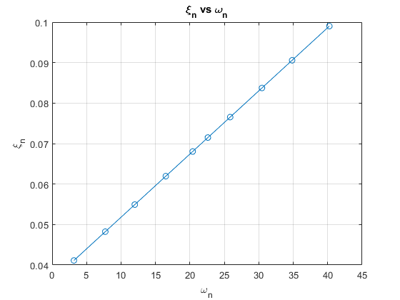
Pregunta 2
Para el registro de Santiago Centro del terremoto Maule 2010
Registro = importdata('stgocentro2010-L.txt');
dt = 0.005;
time_vect = dt:dt:dt*length(Registro.data);
time_length = length(time_vect);
P2 a)
Calcular pseudo-espectro de aceleraciones para el primer modo Parámetros
modoi = 1; Tn_ini = 0.01; Tn_step = 0.01; Tn_fin = 6; udi = 0; ui = 0; beta = 1/4; % Buscar PSa T_xlabel = Tn_ini:Tn_step:Tn_fin; [Sd,Sv,Sa,PSv,PSa] = Newmark_Lineal(beta,xi(modoi),dt,ui,udi,Registro.data,T_xlabel); % cm y segundos % Figura PSa vs Tn figure plot(T_xlabel,PSa/g) xlabel('Periodo T (sec)') ylabel('PSa_1 [g]') title('Pseudo-Espectro de Aceleraciones Modo 1') grid on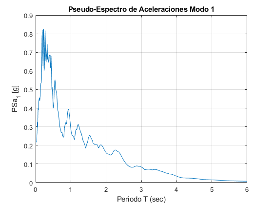
P2 b)
Calcular coeficiente sísmico asociado a demanda elástica del primer modo
% Encontrando periodo n = round(Tn(1)/Tn_step); % Determinación de Ce1 % Ce1_Sa = Sa(n)/g; Ce1_PSa = PSa(n)/g; %Comentario consola fprintf('El valor del coeficiente sísmico elástico Ce_1 = %f \n \n', Ce1_PSa)
El valor del coeficiente sísmico elástico Ce_1 = 0.163039
P2 c)
Suponiendo coeficiente de Importancia I = 1, calcule el corte basal asociado al primer modo en tonf Qo = C*I*P = Ce1*1*Wtotal
Qo1 = Ce1_PSa*Wtotal; % tonf % fprintf('Corte Basal del primer modo Qo_1 = C*I*P = Ce_1*Wtotal = %.4f [tonf] \n \n',Qo1)
P2 d)
Utilizando la distribución en altura de la norma NCh433, calcule las cargas laterales equivalentes en cada piso, en tonf
% Ak Ak = zeros(cant_pisos,1); % Forma de distribución de cargas Zk = (h:h:htotal).'; % Altura de cada piso Ak(1) = sqrt(1)-sqrt(1-Zk(1)/htotal); % Forma de distribución de cargas del primer piso for i = 2:cant_pisos Ak(i,1) = sqrt(1-Zk(i-1)/htotal)-sqrt(1-Zk(i)/htotal); end Ak = flip(Ak); % Damos vuelta para que quede con pisos de arriba a abajo % Fk Pk = diag(M); % Peso de cada piso (de arriba a abajo) sumAjPj = sum(Ak.*Pk); % Suma_(j=1)^N (Aj*Pj) Fk1 = zeros(cant_pisos,1); for i = 1:cant_pisos Fk1(i,1) = Ak(i,1).*Pk(i,1)/sumAjPj*Qo1; % Fuerza de cada piso (de arriba a abajo) end figure plot(Fk1,Pisos,'-o') xlabel('Fk_1 [tonf]') ylabel('Piso') grid on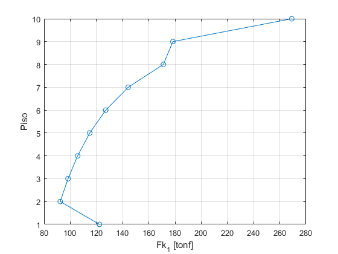
P2 e)
Para cada piso calcular: i) Esfuerzos de corte (en tonf) ii) Desplazamientos laterales (en cm) iii) Razón de derivas de piso (Expresadas como porcentaje)
% P2 e) i) Esfuerzos de corte (en tonf) corte_pisos1 = zeros(cant_pisos,1); for i = 1:cant_pisos corte_pisos1(i,1) = sum(Fk1(1:i)); %tonf end % Corte basal Vb1 = sum(Fk1(:,1)); %P2 e) ii) % Desplazamientos laterales (en cm) % {dxe} = {K}^-1*{Fk} dxe1 = K^-1*Fk1; %cm % ujn_max = Gamma_n(1)*Phi(:,1)*PSa(n)*Tn(1)^2/(4*pi^2); % Modal Espectral % P2 e) iii) % Razón de derivadas de piso (Expresadas como porcentaje) drift1 = dxe1 - [dxe1(2:cant_pisos); 0]; %cm razon_drift1 = drift1/h; %cm/cm % comentarios y figuras figure plot(corte_pisos1,Pisos,'-o') xlabel('V_{Pisos,1} [tonf]') ylabel('Pisos') grid on figure plot(dxe1,Pisos,'-o') xlabel('Desplazamaientos laterales de cada piso (\delta_{xe}) [cm] (modo 1)') ylabel('Pisos') title('\delta_{xe} = [K^{-1}]*Fk_1') grid on % figure % plot(ujn_max,Pisos,'-o') % xlabel('Desplazamiento lateral de cada piso (u_{jn}^{max}) [cm] (modo 1)') % ylabel('Pisos') % title('u_{jn}^{max} = \Gamma_1*\phi(:,1)*PSa_1*T_1/(4*pi^2)') % grid on % disp('Desplazamientos laterales red. de cada piso [cm] (modo 1)') % disp(dxe1) figure plot(drift1,Pisos,'-o') xlabel('Derivas de piso (drift) [cm] (modo1)') ylabel('Pisos') grid on disp('Derivas de piso [cm] (modo 1)') disp(drift1) figure plot(razon_drift1*100,Pisos,'-o') xlabel('Razón de derivas de piso (modo 1)') ylabel('Pisos') grid on % Comentarios consola P2 disp('Pregunta 2, Resultados') fprintf('Corte basal máximo: suma(Fk1) = %f [tonf] \n Corte basal máximo: Qo1 = CIP = %f [tonf] \n \n ',Vb1, Qo1) tabla = table(); tabla.Piso = Pisos; tabla.Fk1 = Fk1; tabla.corte_pisos1 = corte_pisos1; tabla.dxe1 = dxe1; tabla.razon_drift1 = razon_drift1*100; disp(tabla) clear tabla
Derivas de piso [cm] (modo 1)
2.6913
4.4749
3.0928
3.8139
2.9662
3.3491
2.7759
3.0217
2.6021
2.8467
Pregunta 2, Resultados
Corte basal máximo: suma(Fk1) = 1423.327690 [tonf]
Corte basal máximo: Qo1 = CIP = 1423.327690 [tonf]
Piso Fk1 corte_pisos1 dxe1 razon_drift1
____ ______ ____________ ______ ____________
10 269.13 269.13 31.635 0.67282
9 178.36 447.49 28.943 1.1187
8 171.08 618.56 24.468 0.77321
7 144.22 762.79 21.376 0.95349
6 127.06 889.85 17.562 0.74154
5 114.87 1004.7 14.595 0.83727
4 105.64 1110.4 11.246 0.69398
3 98.326 1208.7 8.4705 0.75543
2 92.35 1301 5.4487 0.65052
1 122.29 1423.3 2.8467 0.71166
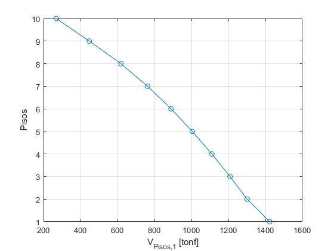 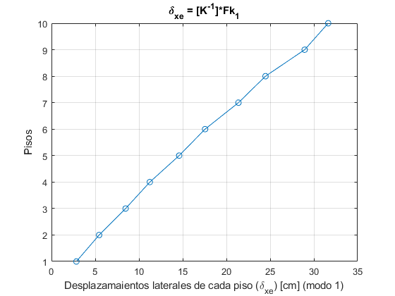  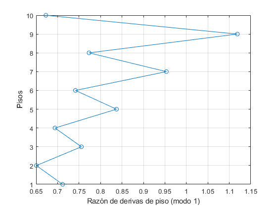
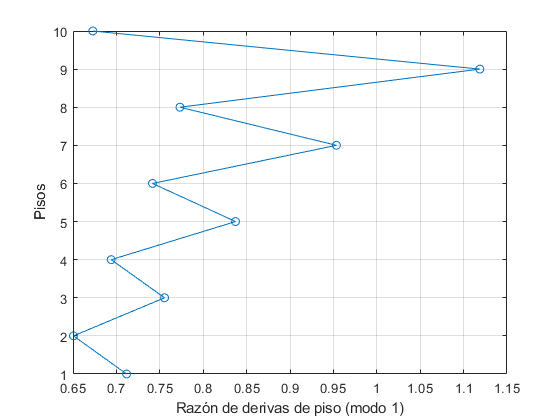 P3
Análisis modal espectral, registro SantiagoCentro_Maule2010 Utilizar 4 modos
n_modos = 4; % Cantidad de modos a utilizar fprintf('Cantidad de modos a considerar n = %0.f \n',n_modos) figure hold on for i = 1:n_modos [Sd,Sv,Sa,PSv,PSa] = Newmark_Lineal(beta,xi(i),dt,ui,udi,Registro.data,T_xlabel); % cm y segundos modo.PSa(:,i) = PSa; % cm/s2 modo.PSv(:,i) = PSv; % cm/s modo.Sa(:,i) = Sa; % cm/s2 modo.Sv(:,i) = Sv; % cm/s modo.Sd(:,i) = Sd; % cm plot(T_xlabel,PSa/g) end hold off xlabel('Tn') ylabel('PSa_n') legend(strcat('Modo ',string(1:n_modos))) grid on
Cantidad de modos a considerar n = 4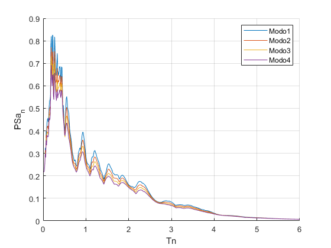
P3 a)
Corte Basal Máximo Lo calculamos en P3 b)
P3 b)
Fuerzas laterales de piso máximas Dn(t) = Sd(Tn) => fs_max(j,n) = Gamma_n(n)*phi(j,n)*mj*PSa(T(n))
fs_max = zeros(cant_pisos,n_modos); figure hold on for n = 1:n_modos for j = 1:cant_pisos fs_max(j,n) = Gamma_n(n)*Phi(j,n)*M(j,j)*modo.PSa(round(Tn(n)/Tn_step),n); end plot(fs_max(:,n),Pisos,'-o') end hold off xlabel('fs_{jn}^{max}') ylabel('Pisos') legend(strcat('Modo ',string(1:n_modos))) grid on % Para encontrar la fuerza máxima de cada piso (combinando todos los modos) % Combinación modal -> SRSS, CQC o ABSSUM % SRSS fs_SRSSmax = zeros(cant_pisos,1); for j = 1:cant_pisos fs_SRSSmax(j,1) = sqrt(sumsqr(fs_max(j,:))); end figure plot(fs_SRSSmax,Pisos,'-o') xlabel('fs_{SRSS}^{max}') ylabel('Pisos') grid on % Corte basal máximo Vb_max = zeros(1,n_modos); for n = 1:n_modos Vb_max(1,n) = sum(fs_max(:,n)); end % SRSS Vb_SRSSmax = sqrt(sumsqr(Vb_max(1,:)));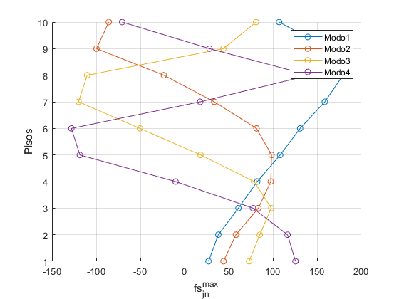 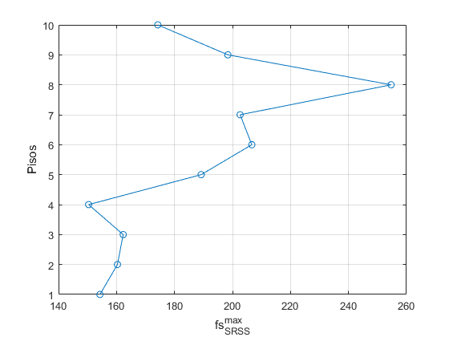
P3 c)
Máximo esfuerzo de corte de piso Primero obtenemos el corte de piso para cada modo
V = zeros(cant_pisos,n_modos); figure hold on for n = 1:n_modos for j = 1:cant_pisos V(j,n) = sum(fs_max(1:j,n)); %tonf end plot(V(:,n),Pisos,'-o') end hold off xlabel('V_{jn} [tonf]') ylabel('Pisos') legend(strcat('Modo ',string(1:n_modos))) grid on % Luego, SSRS V_SRSSmax = zeros(cant_pisos,1); for j = 1:cant_pisos V_SRSSmax(j,1) = sqrt(sumsqr(V(j,:))); end figure plot(V_SRSSmax,Pisos,'-o') xlabel('V_{SRSS}^{max} [tonf]') ylabel('Pisos') grid on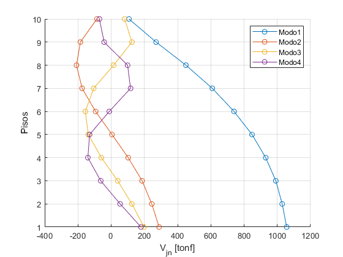 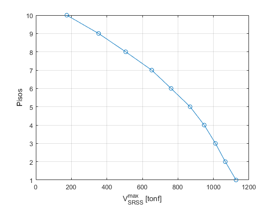
P3 d)
Máximo desplazamiento lateral de cada piso SRSS
u_jnmax = zeros(cant_pisos,n_modos); for n = 1:n_modos for j = 1:cant_pisos u_jnmax(j,n) = Gamma_n(n)*Phi(j,n)*modo.Sd(round(Tn(n)/Tn_step),n); end end % Luego, SSRS u_SRSSmax = zeros(cant_pisos,1); for j = 1:cant_pisos u_SRSSmax(j,1) = sqrt(sumsqr(u_jnmax(j,:))); end figure plot(u_SRSSmax,Pisos,'-o') xlabel('u_{SRSS}^{max} [tonf]') ylabel('Pisos') grid on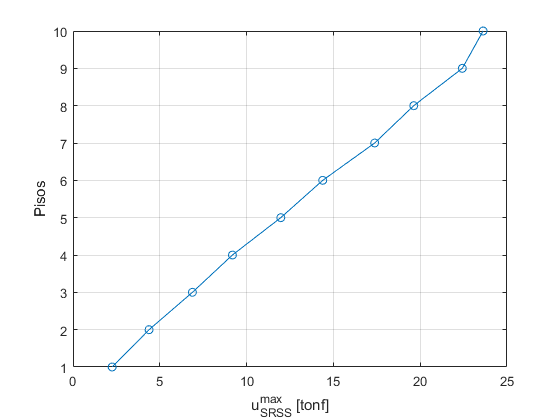
P3 e)
Máxima razón de desplazamiento de piso
rdp = zeros(cant_pisos,n_modos); for j = 1:cant_pisos for n = 1:n_modos if j < cant_pisos rdp(j,n) = (1/h)*Gamma_n(n)*(Phi(j,n)-Phi(j+1,n))*modo.PSa(round(Tn(n)/Tn_step),n)*(1/wn2(n)); elseif j == cant_pisos rdp(j,n) = (1/h)*Gamma_n(n)*(Phi(j,n))*modo.PSa(round(Tn(n)/Tn_step),n)*(1/wn2(n)); end end end % Luego SRSS rdp_SRSSmax = zeros(cant_pisos,1); for j = 1:cant_pisos rdp_SRSSmax(j,1) = sqrt(sumsqr(rdp(j,:))); end figure plot(rdp_SRSSmax*100,Pisos,'-o') xlabel('rdp_{SRSS}^{max} [tonf]') ylabel('Pisos') grid on % Comentarios Consolta P3 disp('Pregunta 3, Resultados') fprintf('Corte basal máximo = %f [tonf] \n \n',Vb_SRSSmax) tabla = table(); tabla.Piso = Pisos; tabla.fs = fs_SRSSmax; tabla.V = V_SRSSmax; tabla.u = u_SRSSmax; tabla.rdp = rdp_SRSSmax*100; disp(tabla) clear tabla
Pregunta 3, Resultados
Corte basal máximo = 1127.258675 [tonf]
Piso fs V u rdp
____ ______ ______ ______ _______
10 174.23 174.23 23.623 0.43558
9 198.41 353.44 22.426 0.88359
8 254.67 505.9 19.628 0.63237
7 202.62 652.5 17.378 0.81563
6 206.65 761.58 14.385 0.63465
5 189.2 868.64 11.969 0.72387
4 150.37 948 9.184 0.5925
3 162.29 1011.2 6.8789 0.63197
2 160.32 1066.6 4.3822 0.53332
1 154.28 1127.3 2.2557 0.56363
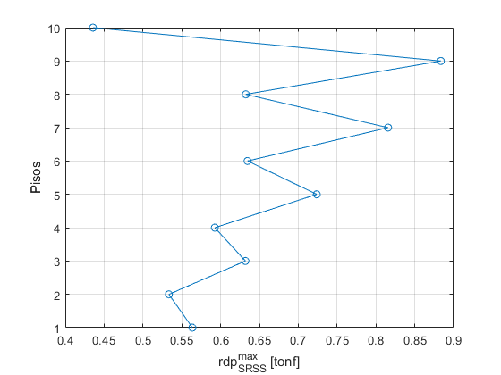 P4 Análisis modal tiempo historia
sn = Gamma_n'.*diag(M).*Phi; % {Sjn} = Gamma_n*mj*Phi_jn n_modos = 4; % Cantidad de modos a considerar en el análisis tiempo-historia figure for i = 1:n_modos Dn = Disp_Newmark_Lineal(beta,xi(i),dt,ui,udi,Registro.data,Tn(i)); % Se determinan todos los Dn(t) para cada modo para un registro y amortig en particular. modo.Dn(:,i) = Dn; subplot(n_modos,1,i) % Graficamos Dn(t) para todos los modos considerados plot(time_vect,modo.Dn(:,i)) ylabel(['D_', num2str(Modos(i)), '(t)']) if i == 1 hold on end ylim([-20 20]) xlim([0 dt*time_length]) end xlabel('tiempo t (sec)') hold off sgtitle('D_n(t)') % Obtención del máximo Dn(t) en el tiempo for i = 1:n_modos modo.Dn_max(i,1) = max(abs(modo.Dn(:,i))); % Buscamos max(Dn(t)), El Dn(t) máximo para cada mood end % % DESPLAZAMIENTO DE PISO % % uj = sum(Gamma_n*Phi_jn*Dn(t)) % uj = zeros(time_length,cant_pisos); % for j = 1:cant_pisos % for n = 1:n_modos % uj(:,j) = uj(:,j) + Gamma_n(n)*Phi(j,n)*modo.Dn(:,n); % Se suman todos los modos % end % end % % % DESPLAZAMIENTOS MODALES DE TECHO % % Desaplazamiento del techo (debe ser controlado) para cada modo % % u1n = Gamma_n*Phi_1n*Dn(t) % u1n = zeros(time_length,n_modos); % figure % for n = 1:n_modos % subplot(n_modos,1,n) % u1n(:,n) = Gamma_n(n)*Phi(1,n)*modo.Dn(:,n); % Desplazamiento de techo para cada modo % plot(time_vect,u1n(:,n)) % ylabel(['u_{1', num2str(Modos(n)), '} (t)']) % ylim([-20 20]) % xlim([0 dt*time_length]) % end % xlabel('tiempo t (sec)') % hold off % sgtitle('u_{1n}(t) = \Gamma_n \Phi_{1n} D_n(t)') % % % % RAZÓN DE DERIVAS MODALES % % Razón de derivas de piso para cada modo por separado % RDPjn = zeros(time_length,cant_pisos,n_modos); % RDP_jn (t) % % for j = 2:cant_pisos % for n = 1:n_modos % RDPjn(:,j,n) = 1/h*Gamma_n(n)*(Phi(j,n)-Phi(j-1,n))*modo.Dn(:,n); % RDP_jn (t) = 1/h*Gamma_n*(Phi_jn-Phi_j-1,n)*Dn(t) % end % end % % pisos_graficar = [9;5]; % Escribir acá los pisos que se quieren graficar % length_pg = length(pisos_graficar); % % figure % Graficamos RDP, para el piso j en los modos considerados (n_modos) % for i = 1:length_pg % subplot(length_pg,1,i) % hold on % for n = 1:n_modos % plot(time_vect,RDPjn(:,i,n)) % end % hold off % ylabel(['RDP_{',num2str(pisos_graficar(i)),'n}']); % end % xlabel('tiempo (t) [sec]')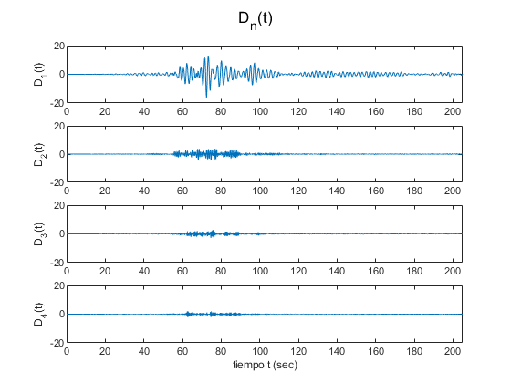
P4 a) Corte basal máximo
Como es solo basal, no depende del número del piso, y solo se suman las contribuciones modales
vb_t = zeros(time_length,1); for n = 1:n_modos vb_t(:,1) = vb_t(:,1) + Mn_ast(n,1)*wn2(n)*modo.Dn(:,n); % Se suma la contribución de cada modo end Vj_max = max(abs(vb_t(:,1))); % Corte vasal máximo es el máximo absoluto
P4 b) Fuerzas laterales máximas
Obtenemos r_jn^st para cada piso para cada modo fs_j(t) = sum( {rjn^st}wn^2*Dn(t) ) El máximo: fs_jmax = max(fs_j(t))
fs_jt = zeros(time_length,cant_pisos); fs_jmax = zeros(cant_pisos,1); for j = 1:cant_pisos for n = 1:n_modos fs_jt(:,j) = fs_jt(:,j) + M(j,j)*Gamma_n(n,1)*Phi(j,n)*wn2(n)*modo.Dn(:,n); % Sum(rjn^st * wn^2 * Dn(t)) end fs_jmax(j,1) = max(abs(fs_jt(:,j))); % Máximo absoluto en el tiempo para el piso end figure plot(fs_jmax,Pisos,'-o') xlabel('fs_{j,max}') ylabel('Pisos') grid on title('fs_{j,max}') xlim([0 250])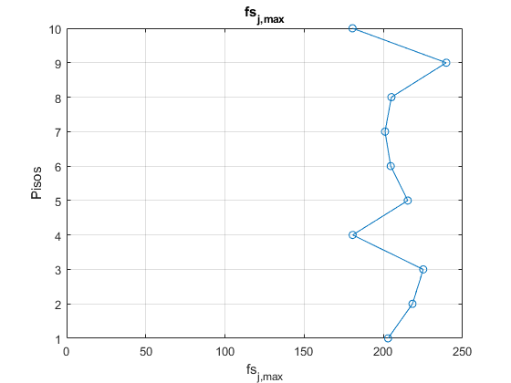
P4 c) Esfuerzo de corte máximo de cada piso
Esfuerzos e corte máximo para cada piso rjnst = Sum_j(m_j*Gamma_n*Phi_jn)
rjnst_v = zeros(cant_pisos,n_modos); V_jt = zeros(time_length,cant_pisos); V_jmax = zeros(cant_pisos,1); for i = 1:cant_pisos for n = 1:n_modos for j = i:cant_pisos rjnst_v(i,n) = rjnst_v(i,n) + M(j,j)*Gamma_n(n,1)*Phi(j,n); end end end for j = 1:cant_pisos for n = 1:n_modos V_jt(:,j) = V_jt(:,j) + rjnst_v(j,n)*wn2(n)*modo.Dn(:,n); % Vj(t) = sum( rjnst_v * wn^2 * Dn(t) ) end V_jmax(j,1) = max(abs(V_jt(:,j))); end V_jmax = flip(V_jmax); % No cacho porq me da al revés figure plot(V_jmax,Pisos,'-o') xlabel('Fuerza de corte de piso') ylabel('Pisos') grid on title('V_{j,max}')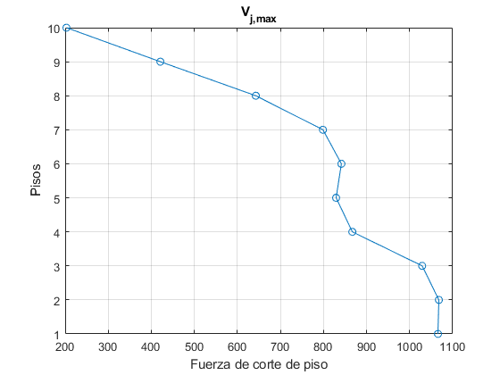
P4 d) desplazamientos laterales máximos
rjnst = (Gamma_n/wn^2)*Phi_jn
rjnst_u = zeros(cant_pisos,n_modos); u_jt = zeros(time_length,cant_pisos); u_jmax = zeros(cant_pisos,1); for j = 1:cant_pisos for n = 1:n_modos rjnst_u(j,n) = Gamma_n(n)/wn2(n)*Phi(j,n); % Mejor guardarlo ya que se ocupan en P4 e) u_jt(:,j) = u_jt(:,j) + rjnst_u(j,n)*wn2(n)*modo.Dn(:,n); end u_jmax(j,1) = max(abs(u_jt(:,j))); end figure plot(u_jmax,Pisos,'-o') xlabel('Desplazamientos laterales máximos') ylabel('Pisos') grid on title('u_{j,max}')

P4 e) razón de derivas de piso máximoas
rjnst = (rjnst(uj)-rjnst(uj+1))/hj
rdp_jt = zeros(time_length,cant_pisos); rdp_jmax = zeros(cant_pisos,1); for j = 1:cant_pisos for n = 1:n_modos if j < cant_pisos rdp_jt(:,j) = rdp_jt(:,j) + (rjnst_u(j,n)-rjnst_u(j+1,n))/h*wn2(n)*modo.Dn(:,n); % Traemos rjnst_u elseif j == cant_pisos rdp_jt(:,j) = rdp_jt(:,j) + (rjnst_u(j,n))/h*wn2(n)*modo.Dn(:,n); % La del primer modo es end end rdp_jmax(j,1) = max(abs(rdp_jt(:,j))); end figure plot(rdp_jmax*100,Pisos,'-o') xlabel('Razón de derivas de piso') ylabel('Pisos') grid on title('rdp_{j,max}') % Comentarios consola P4 disp('Pregunta 4, Resultados') fprintf('Corte basal máximo: %f [tonf] \n \n',Vj_max) tabla = table(); tabla.Piso = Pisos; tabla.fs_jmax = fs_jmax; tabla.V_jmax = V_jmax; tabla.u_jmax = u_jmax; tabla.rdp_jmax = rdp_jmax*100; disp(tabla) clear tabla
Pregunta 4, Resultados
Corte basal máximo: 1065.786480 [tonf]
Piso fs_jmax V_jmax u_jmax rdp_jmax
____ _______ ______ ______ ________
10 180.46 202.9 25.547 0.45116
9 239.64 421.04 23.844 1.0333
8 205.04 642.78 19.776 0.74561
7 201 798.66 16.798 0.88729
6 204.6 841.53 13.249 0.633
5 215.37 829.32 10.96 0.68589
4 180.58 866.96 8.6046 0.52525
3 225.14 1029.2 6.513 0.58907
2 218.34 1067.8 4.1576 0.50656
1 202.9 1065.8 2.1316 0.53289
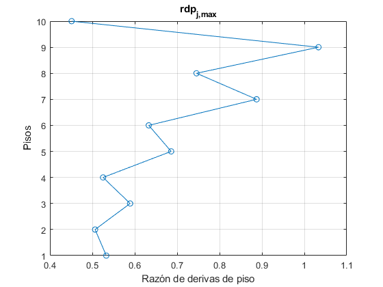 P5
Comparación No se reescribirán las tablas, solo las figuras, pero todas juntas Fuerzas laterales
figure hold on plot(Fk1,Pisos,'-o') plot(fs_SRSSmax,Pisos,'-o') plot(fs_jmax,Pisos,'-o') hold off xlabel('Fuerza lateral de piso máxima [tonf]') ylabel('Pisos') legend('CLE','ME','MTH') grid on % Corte figure hold on plot(corte_pisos1,Pisos,'-o') plot(V_SRSSmax,Pisos,'-o') plot(V_jmax,Pisos,'-o') hold off xlabel('Corte de piso máximo [tonf]') ylabel('Pisos') legend('CLE','ME','MTH') grid on % Desplazamiento figure hold on plot(dxe1,Pisos,'-o') plot(u_SRSSmax,Pisos,'-o') plot(u_jmax,Pisos,'-o') hold off xlabel('Desplazamiento lateral de piso máximo [cm]') ylabel('Pisos') legend('CLE','ME','MTH') grid on % Razón de derivas de piso figure hold on plot(razon_drift1*100,Pisos,'-o') plot(rdp_SRSSmax*100,Pisos,'-o') plot(rdp_jmax*100,Pisos,'-o') hold off xlabel('Razón de deriva de piso máxima') ylabel('Pisos') legend('CLE','ME','MTH') grid on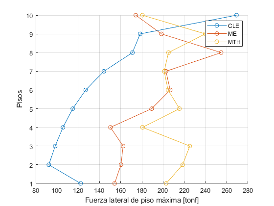 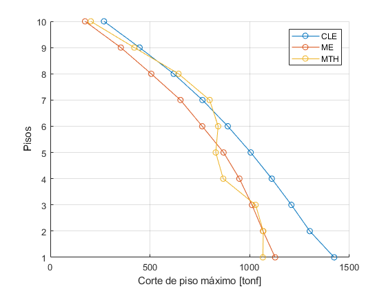 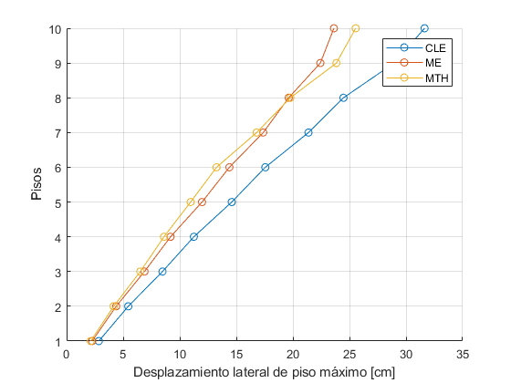